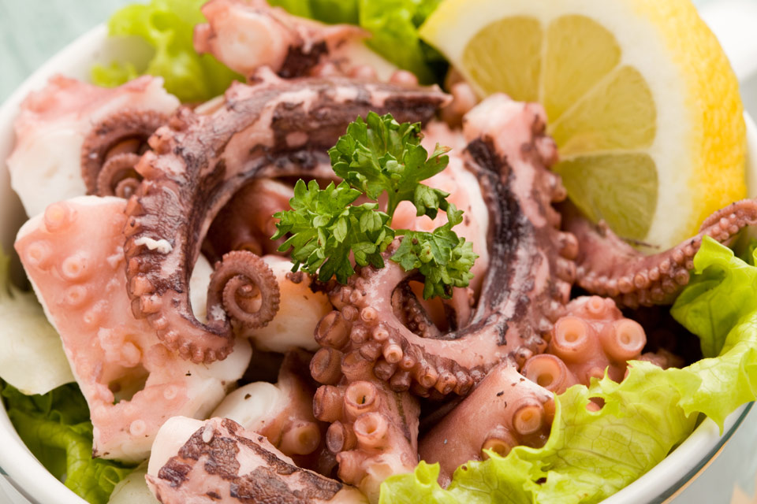

Sannakchi

Sannakchi (San-nakji) - is a traditional Korean dish made from live octopus. It is prepared from a certain type of small octopus (baby octopus), which in Korea is called nakji.
In fact, the octopus for this dish is usually killed before being cut into pieces, but the nervous activity in the tentacles keeps them moving for some time.
The chopped tentacles are sprinkled with sesame seeds on top, drizzled with sesame oil and eaten while they are still moving.
It must be remembered that sannakchi is a dangerous dish for health. Because the tentacles continue to move and the suction cups on them also function, a piece of sannakchi may stick to the throat and cause suffocation.
Sannakji is served in Korean restaurants that specialize in raw fish or at street hawkers. This amazing dish can also be found in bars as a snack for alcoholic drinks such as soju.
Octopus can be found in most warm water oceans. In the Pacific Ocean it lives off the coast of Korea, Japan and Hawaii.
The octopus hunts for its prey (crabs and crayfish) at night, so it is best to start hunting them just before sunset when they are still hiding among the rocks near the shore.
Ingredients - Sannakchi:
- Small live octopuses
- Sesame oil
- Sesame seeds
Recipe - Sannakchi:
- Remove the live octopus from the salt water tank where it is stored until cooked. No cleaning is required as the pieces are served raw.
- Cut into small pieces and place on a plate.
- Drizzle sesame oil over top and sprinkle with sesame seeds.
- Eat while the tentacles are still moving.